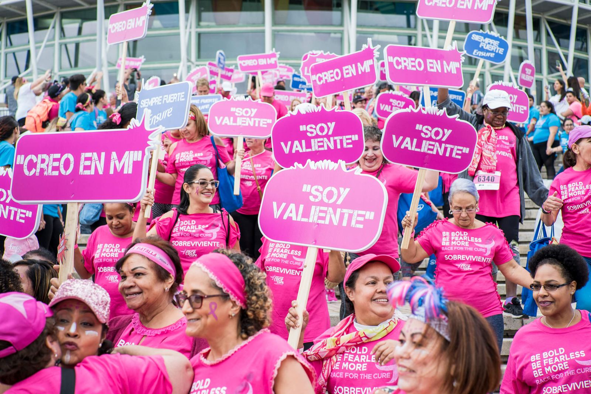

Sobrevivientes
No estás sola en este camino.
El cáncer de seno es un proceso de muchas etapas. No importa dónde te encuentres, podemos ofrecerte recursos educativos y asistencia económica.
Tu etapa
Apoyo para cada momento.
Recién diagnosticada
Respira. Pide tu diagnóstico por escrito, lleva a alguien a tus citas, haz todas las preguntas y considera una segunda opinión.
Preguntas para tu médicoEn tratamiento
Hay asistencia para quimioterapia, radioterapia, medicamentos, transportación y gorros hipotérmicos a través de organizaciones aliadas.
Asistencia en tratamientoSobrevivencia
Después del tratamiento, un plan de cuidado te ayuda a organizar tus citas de seguimiento y tu bienestar.
Plan de cuidado (PDF)Co-sobrevivientes
Familiares y amistades también necesitan apoyo. Hay grupos y programas pensados para quienes acompañan.
Programas de apoyoLinfedema
Si notas hinchazón, pesadez o tirantez en el brazo, la mano o el pecho después de tu cirugía o radiación, díselo a tu médico pronto.
Saber másRegístrate como sobreviviente
Únete al registro para recibir invitaciones especiales al Race for the Cure y otras actividades.
Registro
Galería de sobrevivientes
Más que una carrera, celebramos la vida y reconocemos a quienes han enfrentado esta enfermedad con valentía.
Conoce las historias de sobrevivientes y co-sobrevivientes de nuestra comunidad.